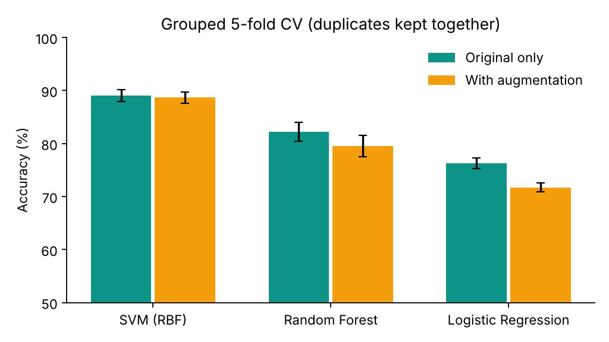
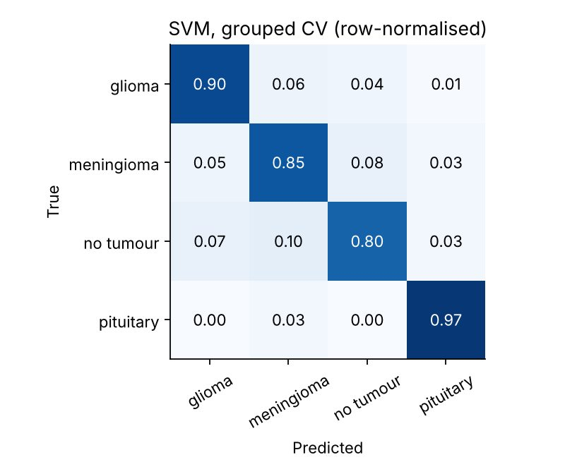
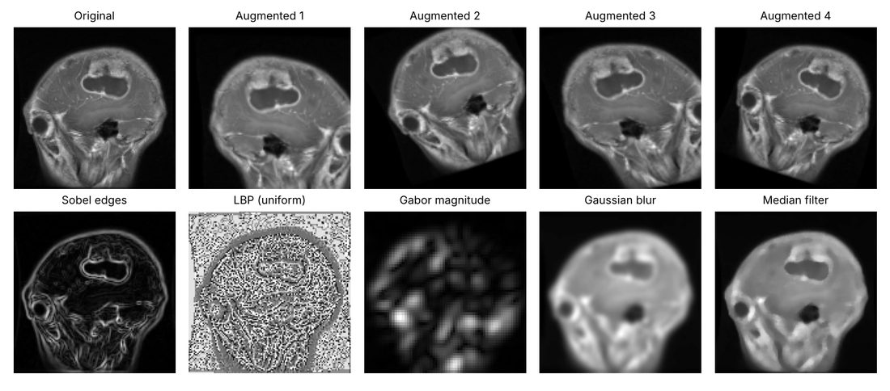

Brain MRI Leakage Audit
Why 89% accuracy fell to 40% on truly unseen scans. Classical features with SVM, Random Forest and Logistic Regression on 3,264 MRIs, plus an audit of the public train/test split.
Each square is one test image. Red squares have a near-identical copy in the training set, which the model has effectively already seen. Drag the slider to see how the share of leaked images inflates the accuracy you would report.
Uses the measured accuracies: 40% on the 135 clean images and 257 of 259 correct on leaked ones. The line shows what any mix of the two would report.
The audit shrinks each image to 32 × 32 grayscale and flags two images as twins when their pixel correlation is at least 0.995. Drop in two images, or load an example. Nothing is uploaded anywhere.
Is 89% accuracy real?
A classical pipeline (HOG, LBP, Gabor, wavelet and edge features into an SVM) reached 89% in grouped cross-validation on 3,264 brain MRIs. Before trusting it, I audited the dataset's official train/test split.
- 259 of 394 test images (66%) have a near-identical copy in training.
- On the 135 test images without one, accuracy drops to 40% (95% CI 32 to 48%), below the 59% you get by always predicting glioma.
- Geometric augmentation did not help these orientation-sensitive features.
Leakage makes weak models look strong
Many published results on this dataset use the official split. The audit shows how much of that performance comes from memorised near-copies rather than learning. Without patient IDs, even grouped cross-validation stays optimistic, so the 40% figure is the more realistic signal.
The fix is a patient-level or near-duplicate-aware split, which is what my pneumonia and knee projects build in from the start.
From the analysis
Select a figure to enlarge it.



